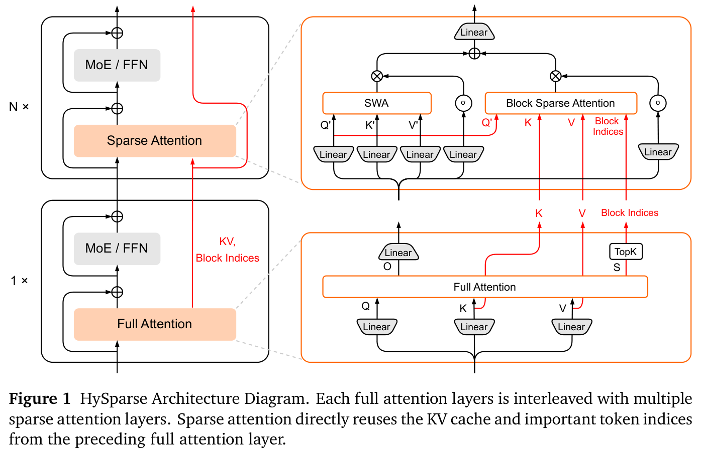
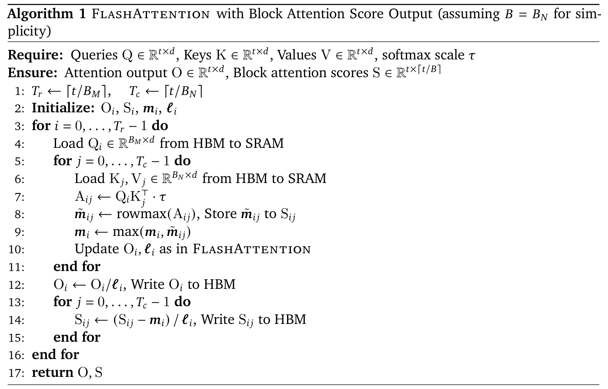
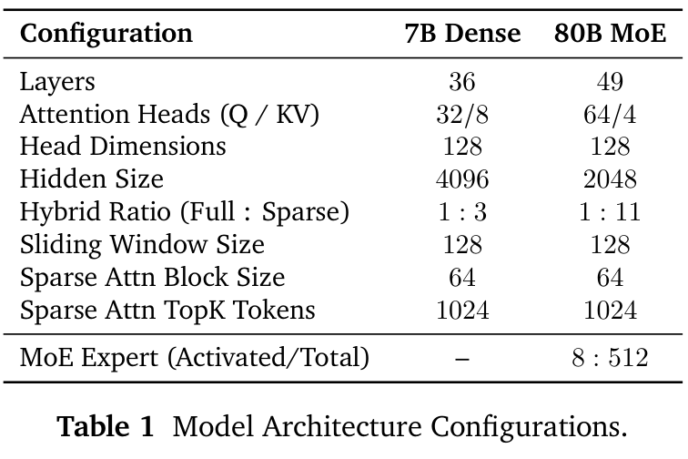
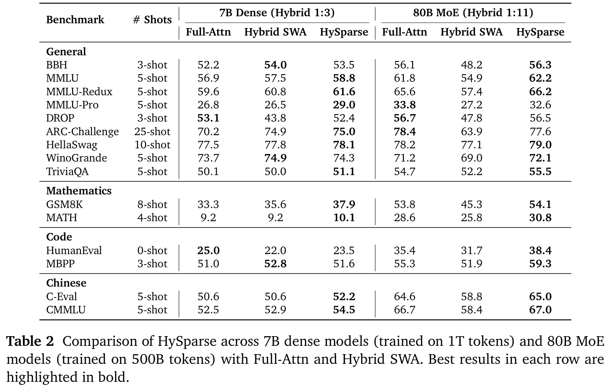
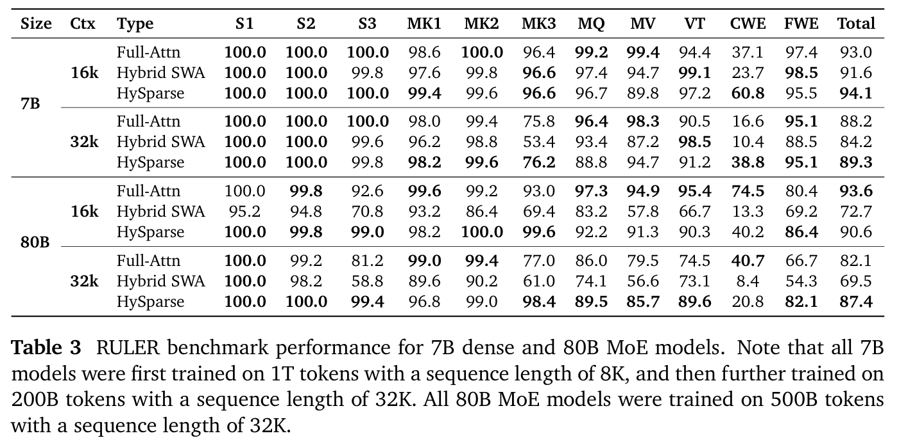
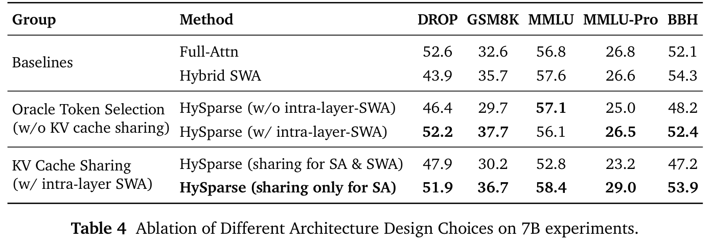
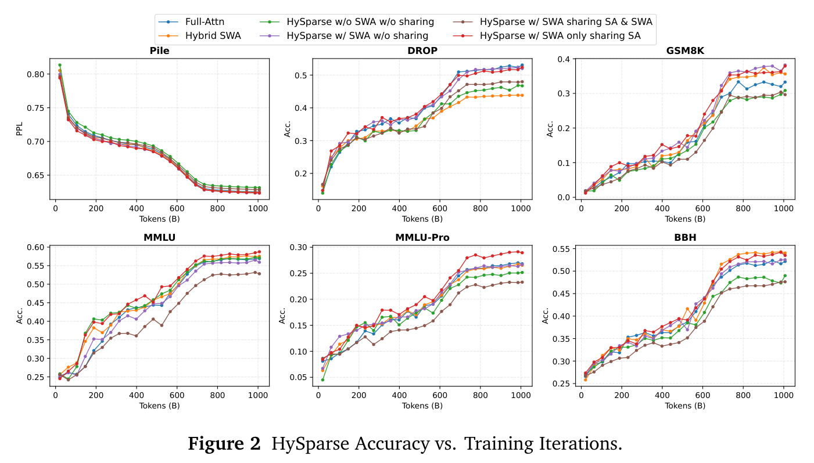

HySparse：采用 oracle token 选择与 KV cache 共享的混合稀疏 attention 架构
LLM-Core Xiaomi
摘要
本工作提出混合稀疏 attention（Hybrid Sparse Attention，HySparse），这是一种在每个全量 attention 层之间交替安排若干稀疏 attention 层的新架构。虽然概念简单，HySparse 却有策略地直接从前一个全量 attention 层获取每个稀疏层的 token 选择结果和 KV cache。这一架构解决了既有稀疏 attention 方法的两个根本性局限。首先，传统方法通常依靠额外的代理来预测 token 重要性，引入额外复杂性，而且可能使性能不够理想。相比之下，HySparse 将全量 attention 层用作精确的 oracle，识别重要 token。其次，现有稀疏 attention 设计往往减少了计算，却没有节省 KV cache。HySparse 使稀疏 attention 层能够复用全量 attention 的 KV cache，从而同时减少计算量和内存占用。我们在 7B 稠密模型和 80B MoE 模型上评估 HySparse。在所有设置下，HySparse 的表现始终优于全量 attention 和混合 SWA 基线。值得注意的是，在总计 49 层的 80B MoE 模型中，只有 5 层采用全量 attention，但 HySparse 仍实现了显著性能提升，同时将 KV cache 存储量减少近 10 倍。
1 引言
对长上下文能力的需求已成为现代大语言模型（LLM）的基石，其推动因素包括 test-time scaling（Guo et al., 2025; Jaech et al., 2024）和 agent 工作流（Anthropic, 2024; Kimi Team et al., 2025a）等新兴范式。然而，标准 Transformer 中的 self-attention 机制随序列长度呈平方增长，导致上下文长度增加时，计算延迟与成本增长到难以承受的程度。
稀疏 attention 为缓解这一平方级瓶颈提供了直接且有效的解决方案（Child et al., 2019）。稀疏 attention 在选出的重要 token 子集上计算 attention，而不是对序列中的全部 token 进行计算。现有方法可以大致分为无需训练的方法和可训练的方法。无需训练的方法依靠固定模式或启发式规则选择重要 token（Jiang et al., 2024; Tang et al., 2024; Xiao et al., 2023, 2024; Yang et al., 2025b; Zhang et al., 2023）。可训练的稀疏 attention 则在训练过程中学习应关注哪些 token，或者通过低成本自蒸馏实现（Gao et al., 2024; Liu et al., 2025a），或者直接融入预训练（Lu et al., 2025; Yuan et al., 2025）。不过，稀疏 attention 架构仍存在两个根本性局限：
（1）基于代理的稀疏 token 选择。稀疏 attention 从根本上依赖一种（接下一页）
⋄ 通讯作者。
（接上一页）选择机制，在 attention 计算之前识别重要 token。现有方法通常依靠轻量代理，例如预定义模式、启发式规则、近似估计或额外选择模块（Gao et al., 2024, 2025; Jiang et al., 2024; Liu et al., 2025a; Lu et al., 2025; Yuan et al., 2025）。然而，这些代理本质上都是近似的，可能无法捕捉 token 的真实重要性，尤其是在长且不断变化的上下文中。因此，稀疏 token 选择往往受代理保真度的限制，可能约束稀疏 attention 的表达能力。可学习的稀疏 attention 虽然通过在训练时学习 token 选择来减轻选择错误，却没有从根本上消除基于代理的瓶颈，而且引入了额外选择模块，增加训练复杂性。
（2）减少计算却没有缓解内存压力。现代稀疏 attention 方法越来越多地采用动态稀疏性，以保持模型保真度。静态模式（例如固定步长或块结构）可以减少 KV cache 存储量，但往往导致明显性能退化；与之不同，动态方法通常保留完整 KV cache。这是因为完全驱逐 KV cache 是不可逆且具有破坏性的，而 token 重要性可能随着生成推进和上下文演变而变化。虽然动态稀疏 attention 能有效减少计算，却无法缓解内存消耗。因此，维护完整大小的 KV cache 仍是服务吞吐量和最大 batch 大小的主要瓶颈，限制了稀疏 attention 在长上下文场景中的实际收益。
为应对这些挑战，我们提出混合稀疏 attention（HySparse）。核心思想是在每个全量 attention 层之间安排多个稀疏 attention 层，让这些稀疏层有策略地从前一个全量层获取重要 token 的选择结果和 KV cache。这一设计受到近期文献中两个经验观察的启发：token 显著性在连续层之间保持稳定（§2.3），而跨层 KV cache 共享能够减少内存，同时不损害性能（§2.4）。在 HySparse 中，全量 attention 能够精确识别重要 token 的选择结果，而且本就会生成 KV cache，稀疏层可直接复用它们。通过复用全量 attention 提供的重要 token 索引，稀疏选择由 oracle 引导。这消除了辅助代理模块的需求，并确保端到端训练稳定。通过复用全量 attention 的 KV cache，稀疏 attention 不会增加每层 KV 开销，有效缓解动态稀疏 attention 带来的内存压力。同时，受混合滑动窗口 attention（SWA）架构（Agarwal et al., 2025; Gemma Team et al., 2025; Xiaomi Team et al., 2026）启发，HySparse 为每个稀疏 attention 层额外添加 SWA 分支，该分支维护一个较小的局部 KV cache，以增强短距离建模能力。
我们在 7B 稠密模型和 80B 混合专家（MoE）模型设置下评估 HySparse。对于 7B 稠密模型，我们采用 1:3 的全量层与稀疏层比例；对于 80B MoE 模型，则采用更激进的 1:11 比例。两种情况下，最后一层均使用全量 attention，以保留全局聚合能力。在不同任务和上下文长度下，HySparse 始终优于全量 attention 和混合 SWA 基线，而且相较混合 SWA 基线，不增加任何额外 KV cache 成本。值得注意的是，总计 49 层的 HySparse 80B MoE 模型只有 5 层使用全量 attention，这意味着 KV cache 减少近 10 倍，但模型仍取得了显著性能提升。与 Hybrid SWA 相比，HySparse 能显著减少全量 attention 层数量，有效地将混合比例推向极限。总而言之，这些结果表明，HySparse 为稀疏 attention 的核心局限提供了简单且有效的架构解决方案，在实现强大长上下文建模能力的同时，拥有明确的效率与内存优势。
2 背景与动机
2.1 无需训练与可训练的稀疏 attention
稀疏 attention 方法可分为无需训练的方法和可训练的方法。无需训练的方法依靠固定模式或启发式规则识别重要 token。它们在推理时作为即插即用的修改应用，能够以极小计算成本快速决定稀疏性（Tang et al., 2024; Xiao et al., 2023, 2024; Zhang et al., 2023）。然而，仅在推理时应用稀疏性会造成训练与推理不匹配，可能导致长 decoding 或多步推理中的误差累积（He and Lab, 2025; Hu et al., 2026; Liu et al., 2025b）。相比之下，可训练的稀疏 attention 方法在训练过程中通过轻量选择模块学习 token 重要性。将稀疏性融入训练过程，可以改善训练与推理之间的对齐，以更高召回率和整体准确率选出信息量更大的 token（Gao et al., 2024, 2025; Liu et al., 2025a; Lu et al., 2025; MiniCPM Team, 2025; Yuan et al., 2025; Zhao et al., 2025）。但训练这些选择模块并不简单。一种方法使用自蒸馏等辅助损失，使 gating 或 indexer 模块与原始稠密 attention 对齐（Gao et al., 2024, 2025; Liu et al., 2025a）。这些方法简单，但并非最优。另一种方法是 NSA（Yuan et al., 2025），它把压缩 attention（选择模块）的输出注入主 attention，执行端到端稀疏预训练。这一设计使选择模块只能通过最终 attention 输出间接获得学习信号，而其 token 选择决策并没有直接监督。
2.2 混合 attention 架构
为降低平方级计算量和 KV cache 成本，混合 attention 已成为扩展上下文长度的一条有前景的路径。例如，MiniMax-01（Li et al., 2025a）以结构化模式集成线性 attention 与 softmax attention 机制。同样，Qwen3-Next（Qwen Team, 2025）和 Kimi Linear（Kimi Team et al., 2025b）采用 Gated DeltaNet（Yang et al., 2024b）或其变体。Nemotron 系列（Basant et al., 2025; Blakeman et al., 2025）和 Jamba（Lieber et al., 2024）把 Mamba 模块（Dao and Gu, 2024; Gu and Dao, 2023）与标准 self-attention 模块集成。GPT-OSS（Agarwal et al., 2025）、Gemma3（Gemma Team et al., 2025）和 MiMo-V2-Flash（Xiaomi Team et al., 2026）等模型采用滑动窗口 attention 层与全局全量 attention 层的异构交替结构。滑动窗口大小可低至 128 个 token，KV cache 开销几乎可忽略不计。然而，采用动态稀疏 attention 的混合模型尚未得到充分探索。
2.3 跨层显著 token 的稳定性
若干同期工作观察到，在标准 transformer 模型中，显著 token（attention 分数较高的稀疏 token）在连续层之间往往相对稳定（Deshmukh et al., 2025; Hao et al., 2025; Yang et al., 2024a, 2025a; Zarch et al., 2025）。这些方法利用这一性质，以无需训练的方式加速推理。具体来说，它们使用一个全量 attention 层识别重要 token，并在后续层复用显著 token 索引，执行稀疏 attention 计算。受这些工作启发，我们将这一经验观察提升为用于预训练的混合 attention 架构：全量 attention 层识别重要 token，随后跟随的稀疏 attention 层复用这些 token。
2.4 跨层 KV cache 共享
跨层 KV cache 共享是一种内存优化技术：复用某层计算得到的 Key 和 Value 张量供后续层使用，而不是为每一层独立重新计算与存储。这一设计大幅降低 KV cache 的内存占用，而经验研究表明，它对模型准确率几乎没有或完全没有负面影响。YOCO（Sun et al., 2024）、CLA（Brandon et al., 2024）、Apple Foundation Model（Li et al., 2025b）以及 Gemma 3n（Gemma Team et al., 2025）直接将跨层 KV cache 共享机制集成到模型架构中。SwiftKV（Qiao et al., 2025）通过蒸馏，改造标准预训练模型，使其在部分层上支持跨层 KV cache 共享。MiniCache（Liu et al., 2024）也观察到，LLM 中间到较深区域的相邻层之间，KV cache 具有很高的相似性，并提出跨层压缩方法来利用这种冗余。
3 方法
3.1 HySparse 概述

如图 1 所示，HySparse 架构将标准 Transformer 主干替换为重复的混合块，每个混合块由一个全量 attention 层及其后连续的 \(N\) 个稀疏 attention 层组成。其核心在于，这些稀疏层使用的稀疏重要 token 索引和 KV cache 均直接来自同一块内前一个全量 attention 层。
全量 attention 层计算标准的缩放点积 self-attention，但额外输出分块 attention 重要性分数 \(S\)，我们据此得到 TopK 块索引。之后的 \(N\) 个稀疏层复用这些索引。为降低 KV cache 内存与带宽（接下一页）
（接上一页）消耗，HySparse 进一步引入跨层 KV cache 共享。稀疏 attention 层在块稀疏 attention 分支中，复用混合块内前一个全量 attention 层生成的 KV cache。相比之下，滑动窗口 attention（SWA）分支维护自己的轻量 KV cache，以增强短距离建模能力。最后，对两个分支的输出应用 sigmoid 门控（Qiu et al., 2025），再求和作为最终 attention 输出。
3.2 全量 attention 层
全量 attention 层遵循 Transformer 中使用的标准 softmax self-attention 形式。为了识别供后续稀疏 attention 使用的显著 token，必须暴露 attention 分数供选择。然而，显式生成完整 attention 矩阵在内存和带宽方面都极其昂贵。因此，现代 Transformer 依靠 FlashAttention（Dao, 2023; Dao et al., 2022; Shah et al., 2024），通过分块计算 softmax 并进行在线归一化，避免显式存储 attention 分数。
为缓解这一问题，HySparse 不输出完整 attention 分数矩阵，而仅显式生成块级（tile 级）最大 attention 分数，用于 TopK 选择。标准 self-attention 的形式为：
其中 \(d\) 为头维度的大小。令 \(B\) 为 attention 分数输出的块大小，则共有 \(\lceil t/B\rceil\) 个块。我们将块索引 \(i\) 对应的列 token 索引集合定义为 \(\mathcal B_i=\{(i-1)B+1,\ldots,\min(iB,N)\}\)。于是，块级最大 attention 分数 \(S\in\mathbb R^{t\times\lceil t/B\rceil}\) 为：
我们发现，采用与 Gao et al.（2024, 2025）类似的方法，只需略微修改 FlashAttention kernel，即可方便地得到 \(S_t\)。具体来说，FlashAttention 在在线 softmax 过程中已计算 attention logits 的逐行最大值；通过存储并适当重新缩放这一中间结果，就可以复用它来获得块级 attention 分数。
算法 1 总结了修改后的 FlashAttention 流程；为简便起见，我们假定稀疏 attention 块大小 \(B\) 与 \(B_N\) 相同。除标准 attention 输出外，kernel 还输出块级 attention 分数，可直接用于后续稀疏 attention 层中的显著块选择，额外开销可以忽略不计。
得到分块 attention 分数 \(S\) 后，我们应用 TopK 算子选出 key 块索引 \(\mathcal I\)，供后续稀疏 attention 层复用。注意，在稀疏 attention 中关注 \(k\) 个 token，对应于选择 TopK 的 \(k/B\) 个 token 块，其中 \(B\) 为块大小。HySparse 中默认的 \(k\) 和 \(B\) 分别为 1024 和 64。在分组查询 attention（GQA）（Ainslie et al., 2023）下，我们进一步在每个 query 组内聚合 \(S\)（采用组内最大值），使同组所有头共享相同的稀疏索引，从而提高稀疏 attention kernel 的效率并降低索引开销。

3.3 稀疏 attention 层
每个稀疏层都包含两个 attention 分支，处理相同的 query，但使用不同的 KV 来源。块稀疏 attention 分支仅关注由 \(\mathcal I\) 索引的 key-value 块，其中 \(\mathcal I\) 与 KV cache 均来自前一个全量 attention 层。SWA 分支关注大小为 \(w\) 的局部滑动窗口，并使用自己的小型 KV cache，以提高局部性和表达能力。在 HySparse 实现中，\(w\) 设置为 128。随后通过轻量 sigmoid 门控融合两个分支的输出。详细过程可建模如下。首先，我们计算标准 SWA 分支输出：
接着，在计算稀疏 attention 分支时，我们使用块索引 \(\mathcal I\)，从全量 attention 层共享的 \(K,V\) 中拼接所选 key 和 value 块。稀疏 attention 与 SWA 分支使用相同的 query \(\boldsymbol q'_t\)，其输出可写为：
最后，对两个分支的输出应用 sigmoid 门控并求和，得到最终 attention（接下一页）
（接上一页）层输出（Qiu et al., 2025）。
通过实验，我们发现，SWA 分支维护独立 KV cache 对于保持模型表达能力至关重要。一种可能解释是，SWA 主要充当局部信息通路，需要不同的表示来捕捉短距离连贯性；而前一个全量 attention 层共享的 KV 针对全局检索优化，可能缺少足够的局部特征。两个分支的门控融合带来全局信息与局部信息的动态混合，同时保持计算和内存使用高效。
4 实验
4.1 实验设置

模型配置。在以下实验中，我们使用一个 36 层的标准 7B 稠密 Transformer 和一个 49 层的 80B-A3B MoE 模型。我们采用分组查询 attention（GQA）：7B 稠密模型使用 32 个 query 头和 8 个 KV 头，80B MoE 模型使用 64 个 query 头和 4 个 KV 头。我们评估三种架构：（1）Full-Attn：所有层均使用标准全量 attention。（2）Hybrid SWA：混合滑动窗口 attention 模型，7B 模型的全量层与 SWA 层比例为 1:3，80B MoE 模型则为 1:11。（3）HySparse：与 Hybrid SWA 使用相同混合比例的混合模型，但以本文提出的稀疏 attention（Top-1024 个 token，块大小为 64）增强 SWA。所有混合模型的最后一层均采用全量 attention。对于稀疏 attention 和滑动窗口 attention，我们遵循 gpt-oss（Agarwal et al., 2025）的方法，引入逐头可学习的 sink bias。对于 MoE 设置中的 Full-Attn，我们还采用 gated attention（Qiu et al., 2025）以稳定训练。详细模型配置列于表 1。
训练超参数。对于 7B 模型，我们首先使用 AdamW 优化器（\(\beta_1=0.9,\beta_2=0.95,\epsilon=10^{-10}\)）、0.1 的权重衰减以及最大范数为 1.0 的 gradient 裁剪，在序列长度为 8,192 的 1T 个 token 上训练。训练采用 BF16 精度和 WSD 调度，最大学习率为 \(8.3\times10^{-4}\)。为扩展模型以进行长上下文评估，我们进一步在 200B 个 token 上训练，序列长度为 32,768，学习率为 \(3.0\times10^{-5}\)。
此阶段将 RoPE 基频调整为 640,000。对于 80B MoE 模型，训练在 500B 个 token 上进行，序列长度为 32,768，采用 WSD 调度，最大学习率为 \(1\times10^{-3}\)，RoPE 基频同样设为 640,000。
评估基准。我们基于一系列涵盖不同能力的基准评估 HySparse：（1）通用语言理解与推理，包括 BBH（Suzgun et al., 2023）、MMLU（Hendrycks et al., 2021a）、MMLU-Redux（Gema et al., 2024）、MMLU-Pro（Wang et al., 2024）、DROP（Dua et al., 2019）、ARC（Clark et al., 2018）、HellaSwag（Zellers et al., 2019）、WinoGrande（Sakaguchi et al., 2020）、TriviaQA（Joshi et al., 2017）；（2）数学推理，包括 GSM8K（Cobbe et al., 2021）、MATH（Hendrycks et al., 2021b）；（3）编程，包括 HumanEval（Chen, 2021）、MBPP（Austin et al., 2021）；（4）中文理解，包括 C-Eval（Huang et al., 2023）、CMMLU（Li et al., 2023）；（5）长上下文，Ruler（Hsieh et al., 2024）。
4.2 HySparse 在通用基准上的表现

7B 稠密模型表现。表 2 比较了三种 attention 变体下的 7B 模型。总体上，HySparse 在通用基准、数学和中文理解方面表现出色；而 Hybrid SWA 提供了有竞争力且计算高效的基线，尤其在 BBH 和 MBPP+ 上表现强劲。具体来说，HySparse 在广泛的知识与推理基准上超过 Full-Attn 基线，包括 MMLU（58.8 对 56.9）、MMLU-Redux（61.6 对 59.6）和 MMLU-Pro（29.0 对 26.8），表明即使 attention 计算减少，稀疏 token 选择也能保持（甚至增强）全局推理与事实回忆。HySparse 在 GSM8K 和 MATH 等多步推理任务上也实现了稳定提升。在经典的多项选择常识与阅读理解基准上，HySparse 要么最好，要么与最好结果相当，在 ARC-Challenge、HellaSwag（接下一页）
（接上一页）和 TriviaQA 上略有提升。对于中文基准，HySparse 在 C-Eval（52.2 对 50.6）和 CMMLU（54.5 对 52.5）上均取得明确提升。
扩展到 80B MoE。我们进一步在 80B-A3B MoE 设置中评估 HySparse，采用更激进的 1:11 全量层与稀疏层比例。虽然只有五个全量 attention 层，HySparse 在几乎所有基准上都优于 Full-Attn 和 Hybrid SWA；只有 MMLU-Pro、DROP 和 ARC-C 略低于 Full-Attn。值得注意的是，性能提升往往大于在 7B 稠密设置中观察到的提升。在这一设置下，Hybrid SWA 相比 Full-Attn 在若干基准上出现明显准确率退化，包括 BBH、DROP、MMLU 系列、GSM8K 和中文理解。这表明，随着混合比例变得更激进，仅依靠局部窗口 attention 已经不够。通过引入稀疏 attention 分支，HySparse 恢复了对全量 attention 选出的全局相关 token 的访问，弥补这一差距，而且在许多情况下甚至超过 Full-Attn 基线，同时所需 KV cache 缩小 10 倍。这些结果突显了 HySparse 的一个关键优势：可以大幅减少全量 attention 层数量，而不牺牲建模能力，这也是 HySparse 的设计依据。
4.3 长上下文基准

表 3 表明，HySparse 始终保持较高的长上下文准确率。对于 7B 稠密模型，HySparse 在 16k 和 32k 长度下的整体得分都优于两个基线，总分分别达到 94.1 和 89.3（Full-Attn 为 93.0 和 88.2，Hybrid SWA 为 91.6 和 84.2）。提升在更困难的多 key/value 子集和偏重推理的子集上最明显，例如，HySparse 相较基线显著提高了 CWE（16k 下为 60.8，32k 下为 38.8），表明其随着上下文增长具有更好的稳健性。对于 80B MoE 模型，在激进混合比例下，Hybrid SWA 显著退化（16k 下为 72.7，32k 下为 69.5），而 HySparse 在 16k 下仍与 Full-Attn 有竞争力（90.6 对 93.6），并在 32k 下明显超过它（87.4 对 82.1）。这主要来自 MK3（98.4 对 77.0）等困难分项的大幅恢复，以及更强的 VT/MQ/MV 稳定性。总体而言，在不同设置下，HySparse 提供与 Full-Attn 相当的长上下文能力，同时显著减少计算量和 KV cache 大小。
4.4 消融研究
本节针对关键架构设计选择给出详细消融研究，重点关注：（1）是否在每个稀疏层内加入一个 SWA 分支；（2）如何在稀疏 attention 分支与 SWA 分支之间应用 KV cache 共享。所有消融研究均在 7B 稠密模型上进行。结果汇总于表 4 和图 2。


研究 1：与 SWA 的层内混合。本研究探讨，当稀疏索引由 oracle token 选择提供时（禁用 KV cache 共享），额外 SWA 分支是否仍有益于稀疏 attention 层。一个自然假设是，SWA 分支可能多余：如果近期或局部上下文 token 很重要，前一个全量 attention 层的 oracle 选择应已将其纳入选定块。然而，我们的结果表明，移除 SWA 分支会导致明显的准确率下降。具体来说，在相同的 oracle 所选稀疏索引下，我们比较 HySparse（不含层内 SWA）与 HySparse（含层内 SWA），两个分支共享相同的 QKV 投影层。
如表 4 所示，加入层内 SWA 分支在大多数基准上带来稳定提升：DROP 从 46.4 提高到 52.2（+5.8），GSM8K 从 29.7 提高到 37.7（+8.0），（接下一页）
（接上一页）MMLU-Pro 从 25.0 提高到 26.5（+1.5），BBH 从 48.2 提高到 52.4（+4.2）。这些提升表明，即使有高质量稀疏选择，专门的滑动窗口通路对于建模短距离连贯性和局部计算模式仍然重要；仅靠稀疏全局检索无法可靠地捕捉这些模式。此外，SWA 分支通过提供稳定的局部通路，可能有助于稳定优化，尤其是在训练早期阶段。
研究 2：跨层 KV cache 共享配置。本研究考察，当每个稀疏层都包含用于全局检索的稀疏 attention（SA）分支和用于局部建模的滑动窗口 attention（SWA）分支时，应如何应用 KV cache 共享。一个自然的设计选择是，让两个分支共享同一份 KV cache，最大化内存复用，即 SA 和 SWA 均复用前一个全量 attention 层生成的 KV cache。然而，这种耦合可能过于严格，因为两个分支承担不同角色：SA 主要需要与块级检索对齐、包含全局信息的 key 和 value；SWA 则受益于强调短距离连贯性和局部计算模式的专用局部表示。在 KV cache 共享实验中，我们比较 HySparse（SA 与 SWA 都共享）和 HySparse（仅 SA 共享）。
如表 4 所示，让 SA 与 SWA 都共享 KV cache 会大幅降低准确率。相比之下，仅让 SA 分支共享 KV，同时为 SWA 保留独立 KV cache，能够在所有评估任务上恢复并提升性能：DROP 从 47.9 提高到 51.9（+4.0），GSM8K 从 30.2 提高到 36.7（+6.5），MMLU 从 52.8 提高到 58.4（+5.6），MMLU-Pro 从 23.2 提高到 29.0（+5.8），BBH 从 47.2 提高到 53.9（+6.7）。这些结果表明，SA 可以安全地复用全量 attention 的跨层 KV cache，以节省 GPU 内存；而 SWA 应保留自己的 KV cache，以保持强大的局部信息。强迫 SWA 复用前一个全量 attention 层的 KV cache，很可能使其失去所需的短距离局部特征，并与针对全局优化的表示纠缠，从而削弱局部通路并降低整体准确率。
5 讨论与未来工作
我们最终能否避免全量 attention？我们的发现与高效 attention 中更广泛的趋势相联系，包括混合 attention 和稀疏 attention 方法。一个反复出现的主题是：在实践中，完全消除 \(O(n^2)\) 式的全量 attention 组件仍然具有挑战性。混合模型保留显式的全量 attention 层，而 SeerAttention（Gao et al., 2024）和 DSA（Liu et al., 2025a）等稀疏 attention 方法通常依赖 gating 或 indexing 机制，虽然形式经过压缩，但仍以 \(O(n^2)\) 运行。在这一背景下，最重要的是昂贵全局计算与更便宜局部或稀疏计算的比例，以及 GPU 内存使用量。我们的结果表明，采用 oracle token 选择和跨层 KV 共享的 HySparse 提供了一条有前景的路径，能够在保持长上下文建模能力的同时降低这一比例。
HySparse 实现高效 KV cache 卸载的潜力。HySparse 还为长上下文服务指出了一种直接的系统级策略：将全量 attention 的 KV cache 卸载到外部内存，并在计算之前预取；而在 GPU 上只保留持久驻留的所选／稀疏 KV，供后续稀疏 attention 层使用。OmniKV（Hao et al., 2025）等先前工作已在后训练设置中探索类似方法。这一技术有潜力显著降低 GPU 上的 KV cache 占用，从而支持更大的 batch 并提高整体推理效率。
6 结论
本工作提出混合稀疏 attention（HySparse），这是一种简单而有效的混合 attention 架构，在每个全量 attention 层之间交替安排多个稀疏 attention 层。通过有策略地从前一个全量 attention 层获取重要 token 的选择结果与 KV cache，HySparse 消除了基于代理的 token 选择需求，使稀疏层能够在没有额外内存开销的情况下运行。重要的是，HySparse 允许大幅减少混合模型中的全量 attention 层数量，而不损害建模能力。在未来工作中，我们计划将 HySparse 扩展到更大的模型规模，并在更多 token 上训练，以充分发挥其高效、准确的长上下文建模潜力。
参考文献
S. Agarwal, L. Ahmad, J. Ai, S. Altman, A. Applebaum, E. Arbus, R. K. Arora, Y. Bai, B. Baker, H. Bao, et al. gpt-oss-120b 与 gpt-oss-20b 模型卡. arXiv 预印本 arXiv:2508.10925, 2025.
J. Ainslie, J. Lee-Thorp, M. De Jong, Y. Zemlyanskiy, F. Lebrón, and S. Sanghai. GQA：从多头 checkpoint 训练广义多 query transformer 模型. arXiv 预印本 arXiv:2305.13245, 2023.
Anthropic. 构建有效的 AI agent. https://www.anthropic.com/research/building-effective-agents, 2024 年 12 月.
J. Austin, A. Odena, M. Nye, M. Bosma, H. Michalewski, D. Dohan, E. Jiang, C. Cai, M. Terry, Q. Le, et al. 使用大语言模型进行程序合成. arXiv 预印本 arXiv:2108.07732, 2021.
A. Basant, A. Khairnar, A. Paithankar, A. Khattar, A. Renduchintala, A. Malte, A. Bercovich, A. Hazare, A. Rico, A. Ficek, et al. NVIDIA Nemotron Nano 2：准确、高效的混合 Mamba-Transformer 推理模型. arXiv 预印本 arXiv:2508.14444, 2025.
A. Blakeman, A. Basant, A. Khattar, A. Renduchintala, A. Bercovich, A. Ficek, A. Bjorlin, A. Taghibakhshi, A. S. Deshmukh, A. S. Mahabaleshwarkar, et al. Nemotron-H：准确、高效的混合 Mamba-Transformer 模型系列. arXiv 预印本 arXiv:2504.03624, 2025.
W. Brandon, M. Mishra, A. Nrusimha, R. Panda, and J. Ragan-Kelley. 通过跨层 attention 减小 transformer key-value cache. 载于第 38 届神经信息处理系统年度会议, 2024.
M. Chen. 评估在代码上训练的大语言模型. arXiv 预印本 arXiv:2107.03374, 2021.
R. Child, S. Gray, A. Radford, and I. Sutskever. 使用稀疏 transformer 生成长序列. arXiv 预印本 arXiv:1904.10509, 2019.
P. Clark, I. Cowhey, O. Etzioni, T. Khot, A. Sabharwal, C. Schoenick, and O. Tafjord. 你以为已经解决问答问题了吗？试试 ARC：AI2 推理挑战. arXiv 预印本, abs/1803.05457, 2018. URL https://arxiv.org/abs/1803.05457.
K. Cobbe, V. Kosaraju, M. Bavarian, M. Chen, H. Jun, L. Kaiser, M. Plappert, J. Tworek, J. Hilton, R. Nakano, et al. 训练验证器解决数学应用题. arXiv 预印本, abs/2110.14168, 2021. URL https://arxiv.org/abs/2110.14168.
T. Dao. FlashAttention-2：通过更好的并行性与工作划分实现更快的 attention. 2023. URL https://arxiv.org/abs/2307.08691.
T. Dao and A. Gu. Transformer 即 SSM：通过结构化状态空间对偶性实现广义模型与高效算法. arXiv 预印本 arXiv:2405.21060, 2024.
T. Dao, D. Fu, S. Ermon, A. Rudra, and C. Ré. FlashAttention：具有 I/O 感知能力的快速、内存高效的精确 attention. 神经信息处理系统进展, 35:16344– 16359, 2022.
D. Deshmukh, S. Goyal, N. Kwatra, and R. Ramjee. Kascade：用于长上下文 LLM 推理的实用稀疏 attention 方法. arXiv 预印本 arXiv:2512.16391, 2025.
参考文献（续）
D. Dua, Y. Wang, P. Dasigi, G. Stanovsky, S. Singh, and M. Gardner. DROP：需要对段落进行离散推理的阅读理解基准. In J. Burstein, C. Doran, and T. Solorio, 编， 2019 年计算语言学协会北美分会会议论文集：人类语言技术，第 1 卷（长论文与短论文）, 页码 2368–2378, 明尼苏达州明尼阿波利斯, 2019. 计算语言学协会. doi: 10.18653/v1/N19-1246. URL https://aclanthology.org/N19-1246.
Y. Gao, Z. Zeng, D. Du, S. Cao, P. Zhou, J. Qi, J. Lai, H. K.-H. So, T. Cao, F. Yang, et al. SeerAttention：在 LLM 中学习内在的稀疏 attention. arXiv 预印本 arXiv:2410.13276, 2024.
Y. Gao, S. Guo, S. Cao, Y. Xia, Y. Cheng, L. Wang, L. Ma, Y. Sun, T. Ye, L. Dong, et al. SeerAttention-R：面向长推理的稀疏 attention 适配. arXiv 预印本 arXiv:2506.08889, 2025.
A. P. Gema, J. O. J. Leang, G. Hong, A. Devoto, A. C. M. Mancino, R. Saxena, X. He, Y. Zhao, X. Du, M. R. G. Madani, et al. MMLU 已经完成使命了吗？ arXiv 预印本, abs/2406.04127, 2024. URL https://arxiv.org/abs/2406.04127.
Gemma Team, A. Kamath, J. Ferret, S. Pathak, N. Vieillard, R. Merhej, S. Perrin, T. Matejovicova, A. Ramé, M. Rivière, et al. Gemma 3 技术报告. arXiv 预印本 arXiv:2503.19786, 2025.
A. Gu and T. Dao. Mamba：通过选择性状态空间实现线性时间序列建模. arXiv 预印本 arXiv:2312.00752, 2023.
D. Guo, D. Yang, H. Zhang, J. Song, R. Zhang, R. Xu, Q. Zhu, S. Ma, P. Wang, X. Bi, et al. DeepSeek-R1：通过强化学习激发 LLM 的推理能力. arXiv 预印本 arXiv:2501.12948, 2025.
J. Hao, Y. Zhu, T. Wang, J. Yu, X. Xin, B. Zheng, Z. Ren, and S. Guo. OmniKV：面向高效长上下文 LLM 的动态上下文选择. 载于第 13 届国际学习表示会议, 2025.
H. He and T. M. Lab. 消除 LLM 推理中的非确定性. Thinking Machines Lab: Connectionism, 2025. doi: 10.64434/tml.20250910. https://thinkingmachines.ai/blog/defeating-nondeterminism-in-llm-inference/.
D. Hendrycks, C. Burns, S. Basart, A. Zou, M. Mazeika, D. Song, and J. Steinhardt. 衡量大规模多任务语言理解. In 第 9 届国际学习表示会议，ICLR 2021，线上会议，奥地利，2021 年 5 月 3–7 日. OpenReview.net, 2021a. URL https://openreview.net/forum?id=d7KBjmI3GmQ.
D. Hendrycks, C. Burns, S. Kadavath, A. Arora, S. Basart, E. Tang, D. Song, and J. Steinhardt. 使用 MATH 数据集衡量数学问题求解能力. arXiv 预印本, abs/2103.03874, 2021b. URL https://arxiv.org/abs/2103.03874.
C.-P. Hsieh, S. Sun, S. Kriman, S. Acharya, D. Rekesh, F. Jia, Y. Zhang, and B. Ginsburg. RULER：长上下文语言模型的真实上下文大小是多少？ arXiv 预印本 arXiv:2404.06654, 2024.
J. Hu, F. Li, M. Xu, F. Meng, S. Zhao, T. Hu, T. Peng, A. Liu, W. Huang, C. Liu, et al. LIL：在长 decoding 阶段应用后训练稀疏 attention 算法时，少就是少. arXiv 预印本 arXiv:2601.03043, 2026.
参考文献（续）
Y. Huang, Y. Bai, Z. Zhu, J. Zhang, J. Zhang, T. Su, J. Liu, C. Lv, Y. Zhang, J. Lei, Y. Fu, M. Sun, and J. He. C-Eval：面向基础模型的多层次、多学科中文评估套件. In A. Oh, T. Naumann, A. Globerson, K. Saenko, M. Hardt, and S. Levine, 编， 神经信息处理系统进展 36: 2023 年神经信息处理系统年度会议（NeurIPS 2023），美国路易斯安那州新奥尔良，2023 年 12 月 10–16 日, 2023. URL http://papers.nips.cc/paper_files/paper/2023/hash/c6ec1844bec96d6d32ae95ae694e23d8-Abstract-Datasets_and_Benchmarks.html.
A. Jaech, A. Kalai, A. Lerer, A. Richardson, A. El-Kishky, A. Low, A. Helyar, A. Madry, A. Beutel, A. Carney, et al. OpenAI o1 系统卡. arXiv 预印本 arXiv:2412.16720, 2024.
H. Jiang, Y. Li, C. Zhang, Q. Wu, X. Luo, S. Ahn, Z. Han, A. H. Abdi, D. Li, C.-Y. Lin, et al. MInference 1.0：通过动态稀疏 attention 加速长上下文 LLM 的 prefill. arXiv 预印本 arXiv:2407.02490, 2024.
M. Joshi, E. Choi, D. Weld, and L. Zettlemoyer. TriviaQA：大规模远程监督的阅读理解挑战数据集. In R. Barzilay and M.-Y. Kan, 编， 第 55 届计算语言学协会年会论文集（第 1 卷：长论文）, 页码 1601–1611, 加拿大温哥华, 2017. 计算语言学协会. doi: 10.18653/v1/P17-1147. URL https://aclanthology.org/P17-1147.
Kimi Team, Y. Bai, Y. Bao, G. Chen, J. Chen, N. Chen, R. Chen, Y. Chen, Y. Chen, Y. Chen, et al. Kimi K2：开放的 agent 智能. arXiv 预印本 arXiv:2507.20534, 2025a.
Kimi Team, Y. Zhang, Z. Lin, X. Yao, J. Hu, F. Meng, C. Liu, X. Men, S. Yang, Z. Li, et al. Kimi Linear：表达能力强且高效的 attention 架构. arXiv 预印本 arXiv:2510.26692, 2025b.
A. Li, B. Gong, B. Yang, B. Shan, C. Liu, C. Zhu, C. Zhang, C. Guo, D. Chen, D. Li, et al. MiniMax-01：通过 Lightning Attention 扩展基础模型. arXiv 预印本 arXiv:2501.08313, 2025a.
E. Li, A. B. L. Larsen, C. Zhang, X. Zhou, J. Qin, D. A. Yap, N. Raghavan, X. Chang, M. Bowler, E. Yildiz, et al. Apple Intelligence 基础语言模型：2025 年技术报告. arXiv 预印本 arXiv:2507.13575, 2025b.
H. Li, Y. Zhang, F. Koto, Y. Yang, H. Zhao, Y. Gong, N. Duan, and T. Baldwin. CMMLU：衡量中文大规模多任务语言理解. arXiv 预印本, abs/2306.09212, 2023. URL https://arxiv.org/abs/2306.09212.
O. Lieber, B. Lenz, H. Bata, G. Cohen, J. Osin, I. Dalmedigos, E. Safahi, S. Meirom, Y. Belinkov, S. Shalev-Shwartz, et al. Jamba：混合 Transformer-Mamba 语言模型. arXiv 预印本 arXiv:2403.19887, 2024.
A. Liu, J. Liu, Z. Pan, Y. He, G. Haffari, and B. Zhuang. MiniCache：大语言模型深度维度上的 KV cache 压缩. 神经信息处理系统进展, 37: 139997–140031, 2024.
A. Liu, A. Mei, B. Lin, B. Xue, B. Wang, B. Xu, B. Wu, B. Zhang, C. Lin, C. Dong, et al. DeepSeek-V3.2：推进开放大语言模型的前沿. arXiv 预印本 arXiv:2512.02556, 2025a.
R. Liu, Y. Sun, M. Zhang, H. Bai, X. Yu, T. Yu, C. Yuan, and L. Hou. 量化会损害推理吗？对量化推理模型的实证研究. arXiv 预印本 arXiv:2504.04823, 2025b.
参考文献（续）
E. Lu, Z. Jiang, J. Liu, Y. Du, T. Jiang, C. Hong, S. Liu, W. He, E. Yuan, Y. Wang, Z. Huang, H. Yuan, S. Xu, X. Xu, G. Lai, Y. Chen, H. Zheng, J. Yan, J. Su, Y. Wu, Y. Zhang, Z. Yang, X. Zhou, M. Zhang, and J. Qiu. MoBA：面向长上下文 LLM 的块 attention 混合. arXiv 预印本 arXiv:2502.13189, 2025.
MiniCPM Team. MiniCPM4：终端设备上的超高效 LLM. 2025.
A. Qiao, Z. Yao, S. Rajbhandari, and Y. He. SwiftKV：通过保留知识的模型变换实现针对 prefill 优化的快速推理. 载于 2025 年自然语言处理实证方法会议论文集, 页码 25745–25764, 2025.
Z. Qiu, Z. Wang, B. Zheng, Z. Huang, K. Wen, S. Yang, R. Men, L. Yu, F. Huang, S. Huang, et al. 面向大语言模型的 gated attention：非线性、稀疏性与无 attention sink. arXiv 预印本 arXiv:2505.06708, 2025.
Qwen Team. Qwen3-Next：迈向极致训练与推理效率. https://qwen.ai/blog?id=4074cca80393150c248e508aa62983f9cb7d27cd&from=research.latest-advancements-list, 2025 年 9 月. 访问日期： 2026-01-22.
K. Sakaguchi, R. L. Bras, C. Bhagavatula, and Y. Choi. WinoGrande：大规模对抗性 Winograd Schema 挑战. In 第 34 届 AAAI 人工智能会议（AAAI 2020）、第 32 届人工智能创新应用会议（IAAI 2020）、第 10 届 AAAI 人工智能教育进展研讨会（EAAI 2020），美国纽约州纽约，2020 年 2 月 7–12 日, 页码 8732–8740. AAAI Press, 2020. URL https://aaai.org/ojs/index.php/AAAI/article/view/6399.
J. Shah, G. Bikshandi, Y. Zhang, V. Thakkar, P. Ramani, and T. Dao. FlashAttention-3：通过异步与低精度实现快速、准确的 attention. 神经信息处理系统进展, 37:68658–68685, 2024.
Y. Sun, L. Dong, Y. Zhu, S. Huang, W. Wang, S. Ma, Q. Zhang, J. Wang, and F. Wei. You Only Cache Once：用于语言模型的 Decoder-Decoder 架构. 神经信息处理系统进展, 37:7339–7361, 2024.
M. Suzgun, N. Scales, N. Schärli, S. Gehrmann, Y. Tay, H. W. Chung, A. Chowdhery, Q. Le, E. Chi, D. Zhou, and J. Wei. 具有挑战性的 BIG-bench 任务，以及 chain-of-thought 能否解决它们. In A. Rogers, J. Boyd-Graber, and N. Okazaki, 编， 计算语言学协会研究成果：ACL 2023, 页码 13003–13051, 加拿大多伦多, 2023. 计算语言学协会. doi: 10.18653/v1/2023.findings-acl.824. URL https://aclanthology.org/2023.findings-acl.824.
J. Tang, Y. Zhao, K. Zhu, G. Xiao, B. Kasikci, and S. Han. Quest：用于高效长上下文 LLM 推理的 query 感知稀疏性. arXiv 预印本 arXiv:2406.10774, 2024.
Y. Wang, X. Ma, G. Zhang, Y. Ni, A. Chandra, S. Guo, W. Ren, A. Arulraj, X. He, Z. Jiang, T. Li, M. Ku, K. Wang, A. Zhuang, R. Fan, X. Yue, and W. Chen. MMLU-Pro：更稳健且更具挑战性的多任务语言理解基准. In A. Globersons, L. Mackey, D. Belgrave, A. Fan, U. Paquet, J. M. Tomczak, and C. Zhang, 编， 神经信息处理系统进展 38: 2024 年神经信息处理系统年度会议（NeurIPS 2024），加拿大不列颠哥伦比亚省温哥华，2024 年 12 月 10–15 日, 2024. URL http://papers.nips.cc/paper_files/paper/2024/hash/ad236edc564f3e3156e1b2feafb99a24-Abstract-Datasets_and_Benchmarks_Track.html.
参考文献（续）
G. Xiao, Y. Tian, B. Chen, S. Han, and M. Lewis. 通过 attention sink 实现高效流式语言模型. arXiv 预印本 arXiv:2309.17453, 2023.
G. Xiao, J. Tang, J. Zuo, J. Guo, S. Yang, H. Tang, Y. Fu, and S. Han. DuoAttention：利用检索头与流式头实现高效长上下文 LLM 推理. arXiv 预印本 arXiv:2410.10819, 2024.
B. Xiaomi Team, Xiao, B. Xia, B. Yang, B. Gao, B. Shen, C. Zhang, C. He, C. Lou, F. Luo, G. Wang, et al. MiMo-V2-Flash 技术报告. arXiv 预印本 arXiv:2601.02780, 2026.
L. Yang, Z. Zhang, Z. Chen, Z. Li, and Z. Jia. TidalDecode：利用位置持久的稀疏 attention 实现快速、准确的 LLM decoding. arXiv 预印本 arXiv:2410.05076, 2024a.
L. Yang, Z. Zhang, A. Jain, S. Cao, B. Yuan, Y. Chen, Z. Jia, and R. Netravali. 少即是多：利用全局局部性实现高效推理的无需训练稀疏 attention. arXiv 预印本 arXiv:2508.07101, 2025a.
S. Yang, J. Kautz, and A. Hatamizadeh. Gated Delta Networks：使用 Delta Rule 改善 Mamba2. arXiv 预印本 arXiv:2412.06464, 2024b.
S. Yang, J. Guo, H. Tang, Q. Hu, G. Xiao, J. Tang, Y. Lin, Z. Liu, Y. Lu, and S. Han. LServe：利用统一稀疏 attention 实现高效长序列 LLM 服务. arXiv 预印本 arXiv:2502.14866, 2025b.
J. Yuan, H. Gao, D. Dai, J. Luo, L. Zhao, Z. Zhang, Z. Xie, Y. Wei, L. Wang, Z. Xiao, et al. Native Sparse Attention：与硬件对齐且原生可训练的稀疏 attention. arXiv 预印本 arXiv:2502.11089, 2025.
H. E. Zarch, L. Gao, C. Jiang, and M. Annavarm. Delta：用于高效长上下文推理的动态层感知 token attention. arXiv 预印本 arXiv:2510.09883, 2025.
R. Zellers, A. Holtzman, Y. Bisk, A. Farhadi, and Y. Choi. HellaSwag：机器真的能补完你的句子吗？ In A. Korhonen, D. Traum, and L. Màrquez, 编， 第 57 届计算语言学协会年会论文集, 页码 4791–4800, 意大利佛罗伦萨, 2019. 计算语言学协会. doi: 10.18653/v1/P19-1472. URL https://aclanthology.org/P19-1472.
Z. Zhang, Y. Sheng, T. Zhou, T. Chen, L. Zheng, R. Cai, Z. Song, Y. Tian, C. Re, C. Barrett, Z. Wang, and B. Chen. H2O：用于大语言模型高效生成式推理的 Heavy-Hitter Oracle. 载于第 37 届神经信息处理系统会议, 2023. URL https://openreview.net/forum?id=RkRrPp7GKO.
W. Zhao, Z. Zhou, Z. Su, C. Xiao, Y. Li, Y. Li, Y. Zhang, W. Zhao, Z. Li, Y. Huang, et al. InfLLM-V2：通过可切换稠密与稀疏的 attention 实现无缝短到长适配. arXiv 预印本 arXiv:2509.24663, 2025.